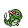

#029
Caterpie
Bug
SwarmBoosts Bug moves in a pinch.
Shield DustBlocks the added effects of moves.
Base stats Total 195
HP45
Attack30
Defense35
Speed45
Sp. Atk20
Sp. Def20
Evolution
Training & breeding
- Catch rate
- 255 / 255
- Base experience
- 39
- Wild held items
- None
- Gender ratio
- 50% male, 50% female
- Egg groups
- Bug
- Hatch time
- 15 egg cycles (~3,840 steps)
- Growth rate
- Medium Fast
Level-up moves
LevelMoveTypeCat.PowerAcc.
TM / HM moves 0
Cannot learn any TMs or HMs.